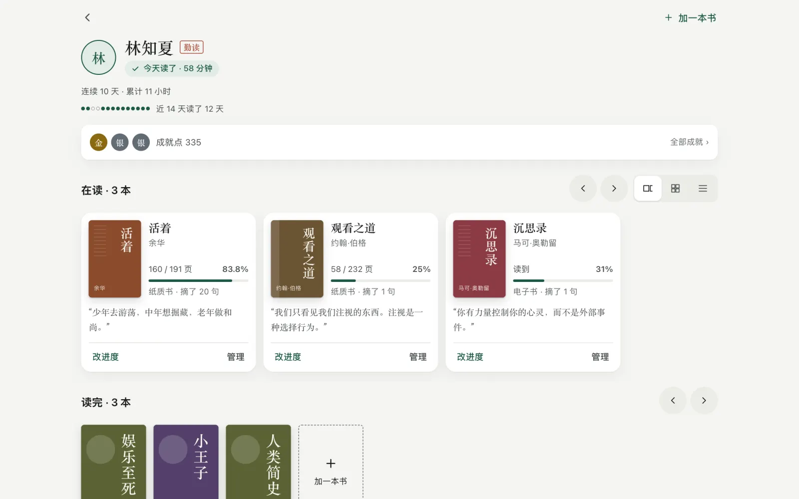
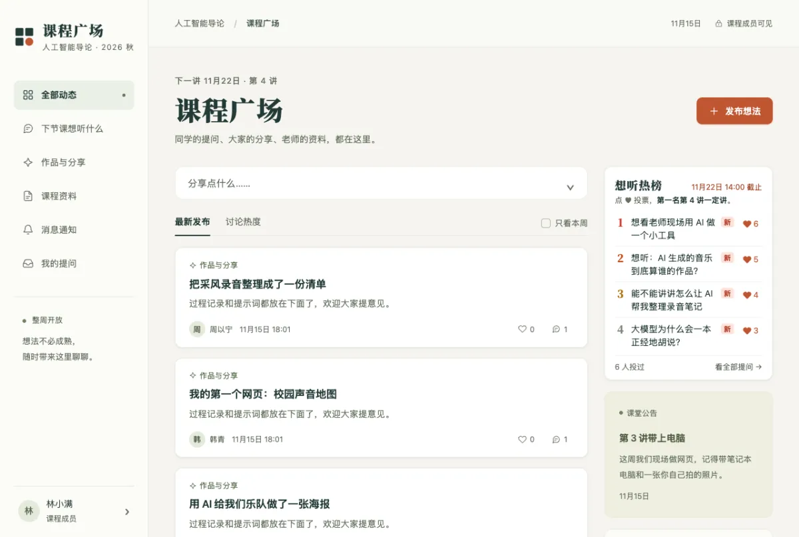
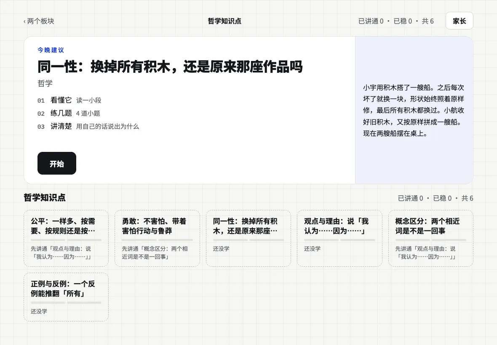
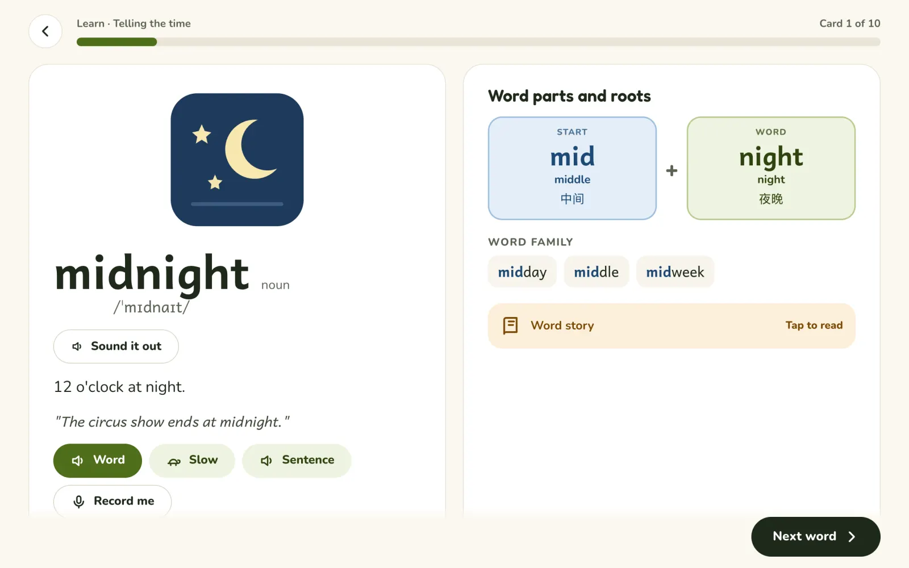

影像与声音课件Image & Sound Lessons
把相机、镜头、麦克风和扬声器一件件拆开来讲的交互课件。学生在 3D 场景里转光圈、换焦距、挪太阳，马上就能看到景深、曝光和影子怎么变。
先一次只动一个参数，到最后一关才把所有参数一起打开。
看看里面 →我不是程序员。这里的东西，都是我用自然语言和 AI 一起做出来的：给学生的课件和学习平台，给儿子积木和他同学们的学习工具。每一个都在真实使用。这一页放的是它们的样子；点进去，是为什么要做，以及做的过程中想明白的事。
I'm not a programmer. Everything here was built by talking it through with AI: lessons and learning platforms for my students, and learning tools for my son Jim and his classmates. All of them are in real use. This page shows what they look like; open one to see why it exists and what building it taught me.
我真正开始尝试用 AI 做东西，不是从课程平台开始，而是从掼蛋记分开始。我没有什么软件开发背景，也从看不懂代码开始，但那次我把从需求、修改到上线的整个过程跑了一遍。原来遇到现实里的问题，我不一定只能说“可惜我不会”，也可以先试着把它说清楚，看看能做出什么。
“专业标签之外”教师沙龙 · 2026.11
为我的课和研究团队做的工具。
Tools for my classes and my research team.
把相机、镜头、麦克风和扬声器一件件拆开来讲的交互课件。学生在 3D 场景里转光圈、换焦距、挪太阳，马上就能看到景深、曝光和影子怎么变。
先一次只动一个参数，到最后一关才把所有参数一起打开。
看看里面 →
给学生的每日阅读打卡。读了几分钟、读到哪里，再摘一句打动你的话、写一句想法，这一天才算读过。同学之间能看见彼此在读什么，也能在摘句下面回一句。
一天算不算读过，看的是你摘下的那一句，而不是你计了多少分钟。
看看里面 →
音视频技术专业英语的课后练习。每天复习到期的词根，再学几个新的；每张卡片都附着“课上”那一刻：老师怎么类比的，同学们怎么猜出来的。
卡片上写的不只是释义，还有课堂上发生过的事。学生记住的往往是那个瞬间。
看看里面 →
一门课的班级社区。同学可以匿名提问、分享作品，也可以给“下节课想听什么”投票，票数第一的话题下节课一定讲。
让学生决定一部分课讲什么。
看看里面 →
我们在秦岭录下的森林声音，一个个标在地图上。原始录音、加工过的声音、用它们做成的音乐连成一棵“来龙去脉”的树。
每一件作品，都能找回它出自哪一段录音。
看看里面 →为儿子积木做的学习工具。积木讲通只有他一个用户；Olive Words 是他和英语班的同学每天背单词的地方。他是最严格的测试员。
Learning tools for my son Jim: one built for him alone, one he shares with his English class. He is the toughest tester.

看懂、练几题，再用自己的话把道理讲给 AI 小伙伴“铁蛋”听。比如：一艘积木船的每一块都换过了，它还是原来那艘船吗？
积木的推理常常比题目更深，却被判“没通过”。所以我把“过 / 不过”改成了一级一级往上走。
看看里面 →
积木英语班的单词作业。Olive 老师每周布置要背的词，孩子们在自己的 iPad 上看图、听音、拆词、拼写，还能用学过的词让 AI 写一个只属于自己的小故事。
落下了不用设置什么，系统自己把后面几天变大一点，让孩子追得上。
看看里面 →每周一篇：这一周我和学生们拿 AI 做了什么。
A weekly log of what my students and I built with AI.
点开每个项目，能看到更多截图、可以直接玩的部分、我为什么做它，以及线上入口。学生平台需要课上发的账号；想要一个演示账号、想看代码，或者只是想聊聊，欢迎来信：jihangyurec@gmail.com
Open any project for more screenshots, parts you can play with, why I built it, and its live link. The student platforms need a class account; for a demo login, the code, or just a chat, write to me.